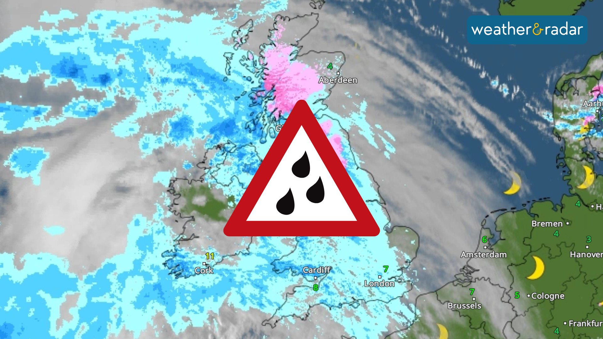

Toyota used market
data analysis
An end-to-end data analytics project using a Toyota Used Cars dataset, focusing on data cleaning, preprocessing, and visualization with Python and Power BI.

Data Analyst Skilled in SQL, Python, Tableu, Power BI @DeshanGamage
An end-to-end data analytics project using a Toyota Used Cars dataset, focusing on data cleaning, preprocessing, and visualization with Python and Power BI.

This project focuses on preparing and analyzing a weather-based Rain Prediction dataset using Python for data cleaning and MySQL for exploratory data analysis (EDA). The goal is to build a clean, reliable dataset and extract meaningful insights that can support future machine-learning models for rainfall prediction.
This project focuses on cleaning and preparing a Sri Lanka flood risk dataset using Python (pandas) in Google Colab. Data preprocessing included handling missing values, standardizing fields, and validating geographic data. The cleaned dataset was visualized in Tableau Public using interactive dashboards and geospatial analysis.
Performed end-to-end data cleaning and exploratory data analysis (EDA) in Python using Google Colab. Cleaned missing values, removed duplicates, standardized data, and analyzed trends using visualizations, correlations, and statistical summaries on GitHub trending repositories.
Data cleaning of the spotify_data clean Spotify dataset in MySQL. Tasks include date conversion, duplicate removal, NULL handling, text trimming, numeric validation, and preparing structured clean data for analysis.
{kind=link}